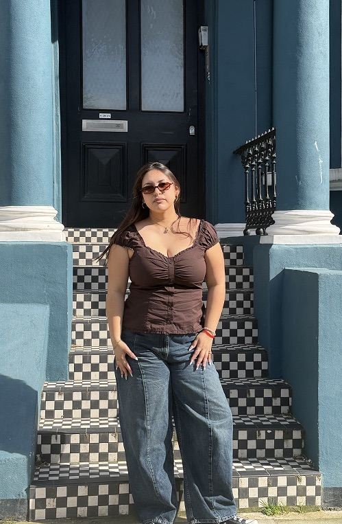

Hello world! I’m Brenda Reyes, a Design major / Business minor student at USF!
Thrifting has always been something I have done to feel more comfortable in myself. When I was younger, that’s where I would find clothes that would fit me well and were sometimes cuter and more flattering than the corny mid/plus size clothing options in retail stores.
Despite me now finding brands that are “friendlier” to larger women, I still enjoy thrifting since I still like finding pretty vintage pieces & accessories. It’s also a bit more sustainable than contributing to fast fashion.
This was a very special experience that I do not get very often, so thrifting in Paris was amazing!!!
I hope I am able to help you in your own Parisian thrifting journey!